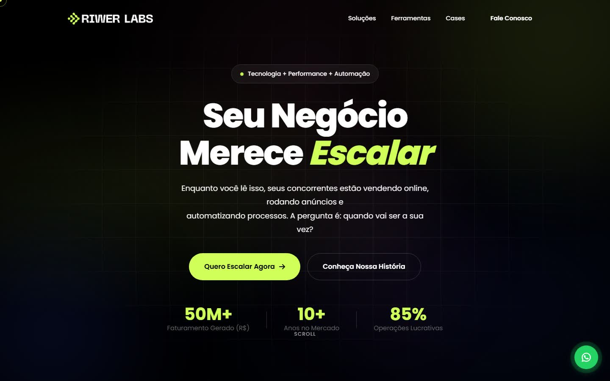
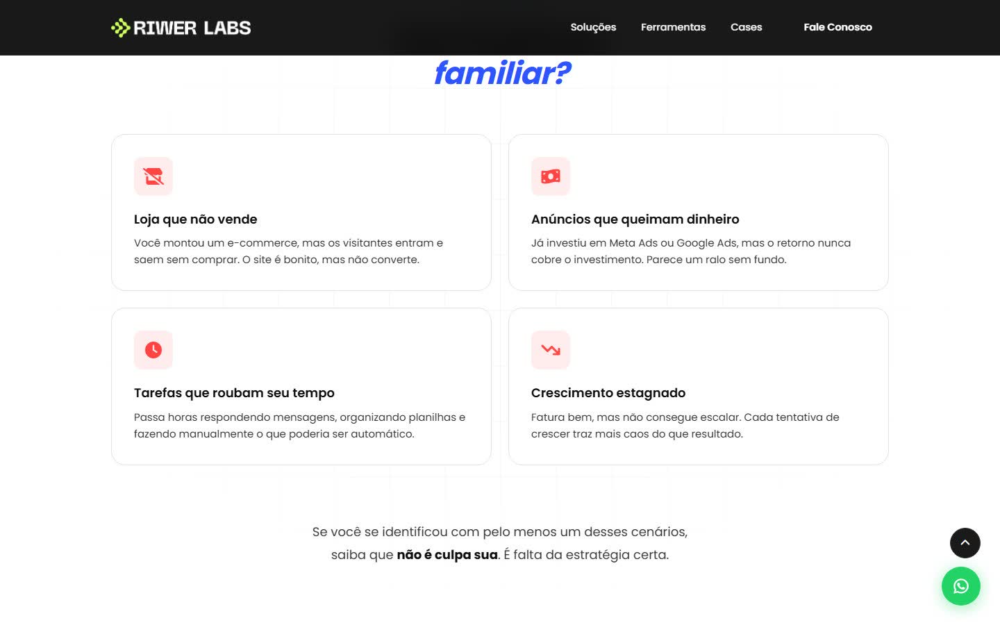
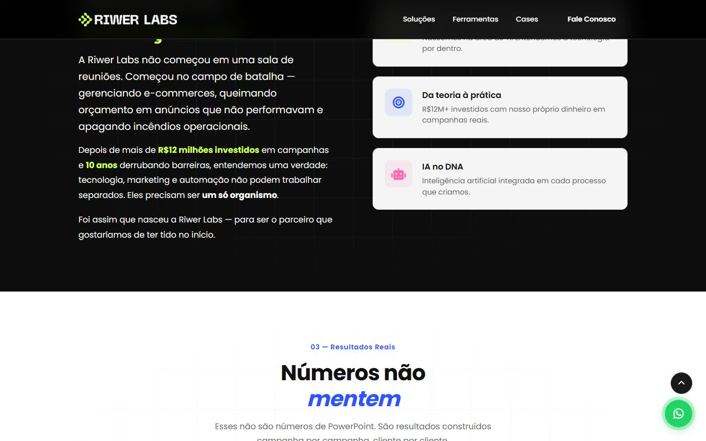
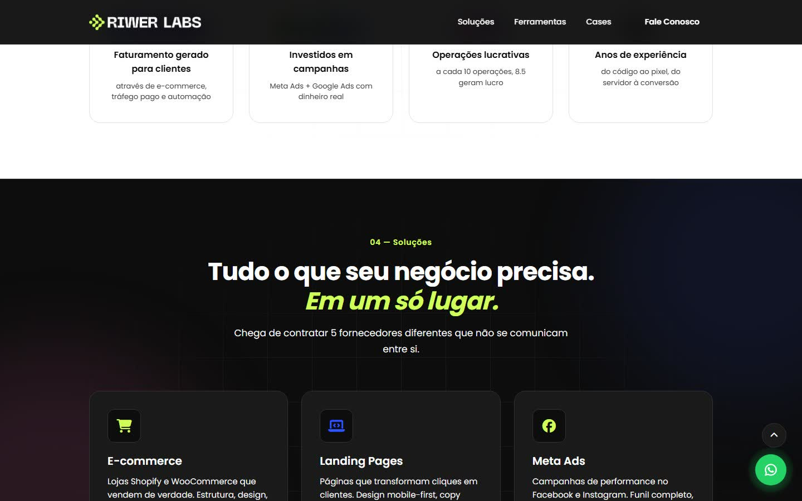
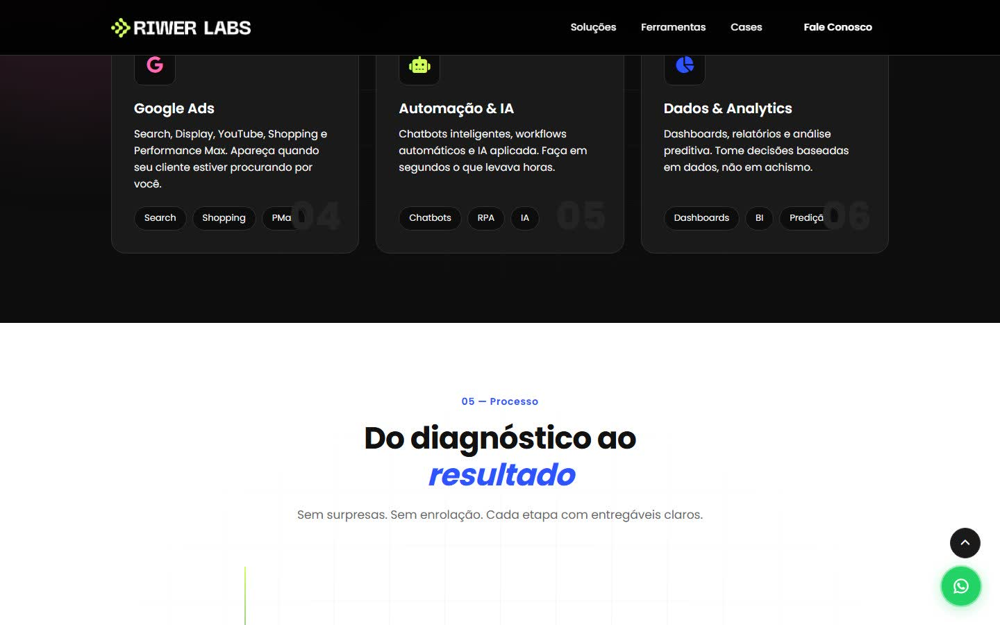
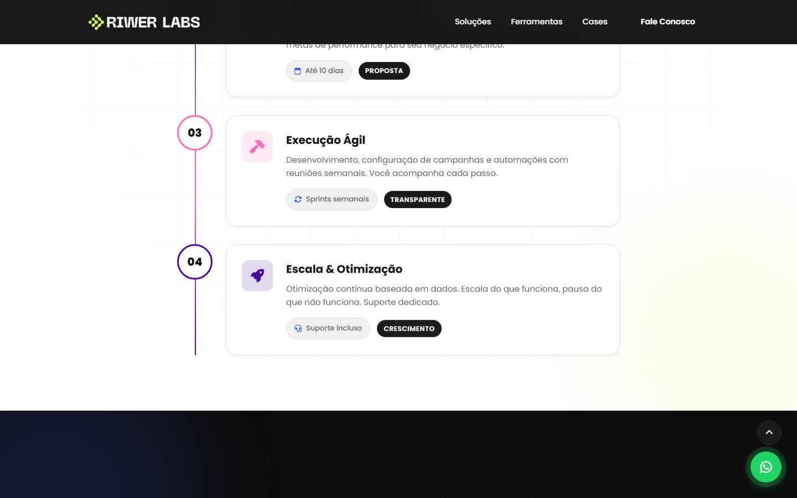
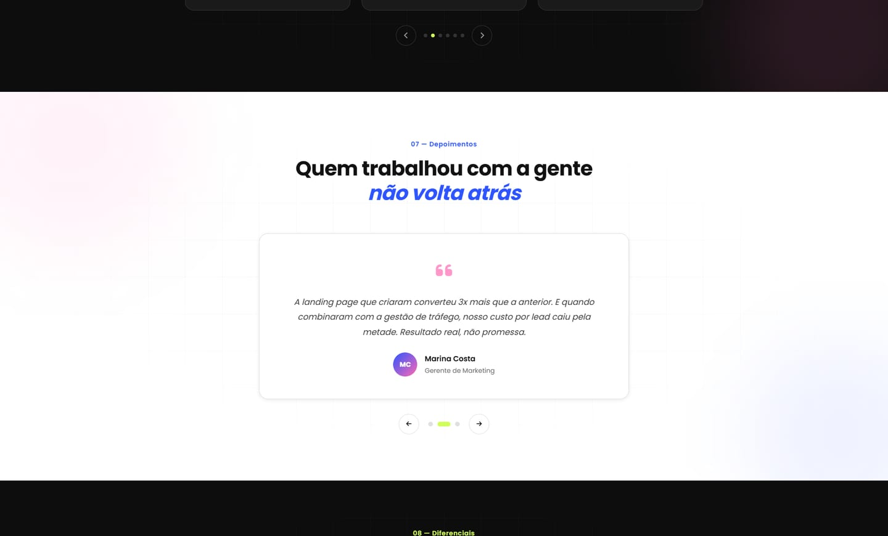
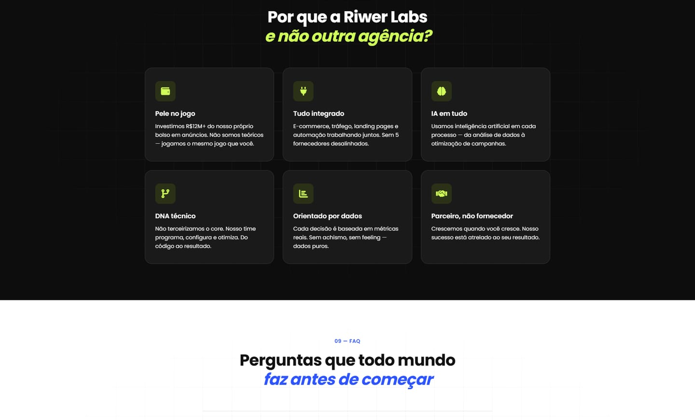
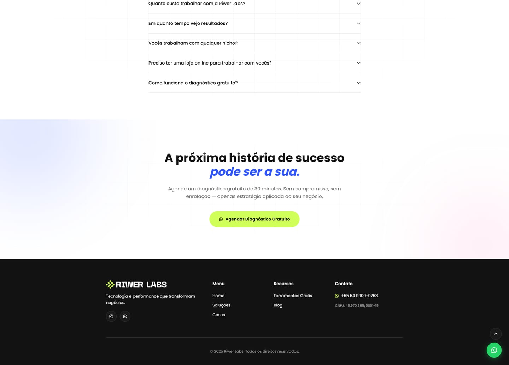

Riwer Labs

Tecnología y performance
Riwer Labs es una agencia brasileña que reúne tecnología y marketing de resultados: tiendas online, landing pages, automatizaciones con IA y gestión de anuncios bajo un mismo equipo.
- Desafío
- Crear la marca y el sitio de una agencia nueva que compite con proveedores sueltos, y convencer a dueños de negocio de que la tecnología y el tráfico pagado tienen que trabajar juntos.
- Solución
- Una identidad oscura con verde lima y azul eléctrico, de tono técnico y directo. El sitio sigue la lógica de una venta: abre con el problema («Isso te parece familiar?»), cuenta el origen de la agencia, muestra cifras, servicios, el proceso del diagnóstico al resultado, cases, testimonios y preguntas frecuentes, y termina en un diagnóstico gratuito.
- Mi rol
- Identidad visual, diseño y desarrollo del sitio, escrito a mano en HTML, CSS y JavaScript, sin frameworks.
- Resultado
- En línea desde 2025 en riwerlabs.com. La identidad también se aplica en las redes de la agencia, que diseño de forma recurrente.








Créditos
Cliente
Riwer Labs
Año
2025
Servicios
Identidad visual · Diseño web · Desarrollo
Mi rol
Identidad visual · Diseño · Desarrollo web
Tecnología
HTML · CSS · JavaScript
Sitio